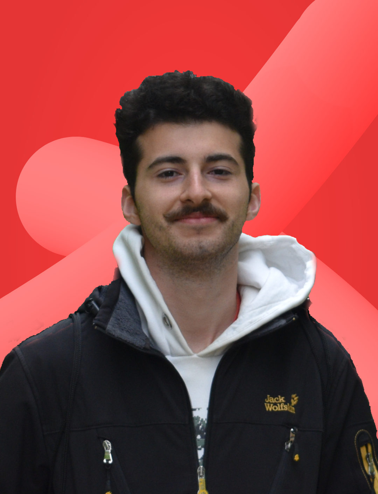
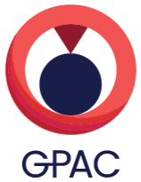
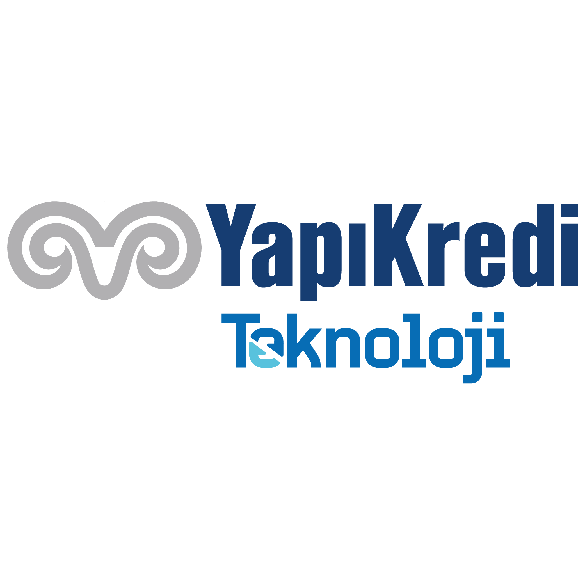

Tan Cetiner
Computer science master’s student at
IP Paris
with a wide range of interests and experience in computer
graphics, software engineering, computer vision, deep learning and
parallel computing.
Also working as a freelance web developer.
Contact me
for possible collaborations!

Here are some jobs/works/projects that I've been involved and
contributed in the past.
Le Grand Mont
A B2B platform designed to connect local marble producers from
Türkiye with businesses in the marble sector worldwide. I was
responsible for the full development of the platform,
including backend, frontend, and database design, utilizing
PHP Laravel, Laravel Livewire, and MySQL. New features are
continuously being added to enhance user experience and
functionality. This project provided a valuable opportunity to
sharpen my full-stack software engineering skills and gain
practical experience in the B2B domain.

Multimedia Graph Visualization
Engaged in a research project at Telecom Paris, collaborating
with the multimedia team to enhance the
[GPAC](https://gpac.io/) platform. The Multimedia Graph
Visualization project was designed to simplify the
complexities of filter graphs by enabling visualization of
data flow within a web application. This project focused on
creating an intuitive and interactive interface that allowed
users to understand and manipulate multimedia graphs
effectively.
Meti-Box
My debut project in the freelance domain, a full-stack web
application designed to facilitate seamless communication,
information exchange, and file management for accountant
companies and their clients. Built on PHP Laravel, Laravel
Livewire, and Postgresql, this project accelerated my
proficiency in these technologies within a fast-paced
development environment. Continuously evolving to meet the
evolving needs of the accounting industry, Meti-Box remains an
ongoing endeavor, enhancing collaboration and efficiency in
the accounting context.

Yapı Kredi Teknoloji
At
Yapı Kredi Teknoloji, I served as a Software Engineer, contributing to the
development of full-stack web applications within a
microservice architecture. Leveraging Java Spring Framework
for the backend and React.js for the frontend, I collaborated
closely with cross-functional teams in an Agile environment.
PURE Research
Throughout my participation in the
PURE
program, I engaged in two research projects. In Spring 2023, I
contributed to the development of computer vision object
detection algorithms for handwritten text recognition in
century-old Ottoman documents, utilizing PyTorch.
Additionally, in Spring 2022, I researched the NLP aspect of a
project aimed at analyzing educational materials to identify
prerequisite relations. This involved employing Python
alongside NLP libraries like NLTK and Gensim to uncover
complex relationships within educational content.
In my spare time, I enjoy writing short stories. You can access my
blog
here
Please note that all the posts are in Turkish...
Another thing I really love is movies. I enjoy watching films by
great directors and also trying to get better at making videos
myself. On my
Youtube channel, I share my experiences in Paris. Just so you know, all the videos
are in Turkish.